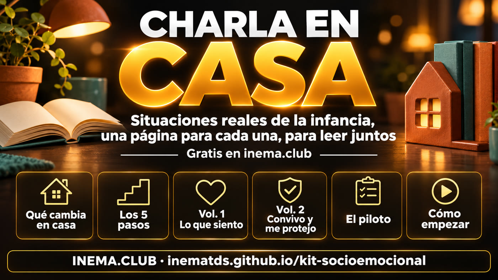
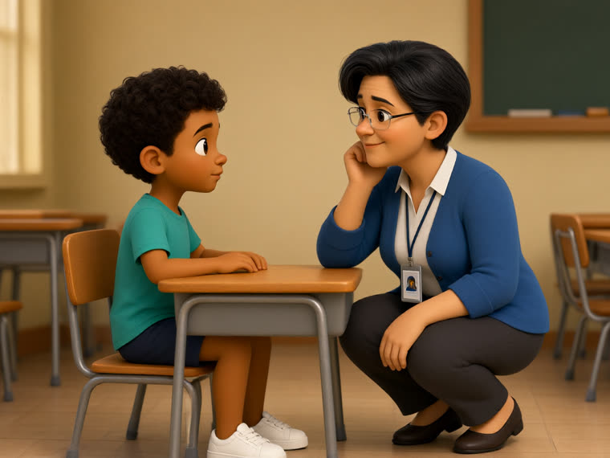
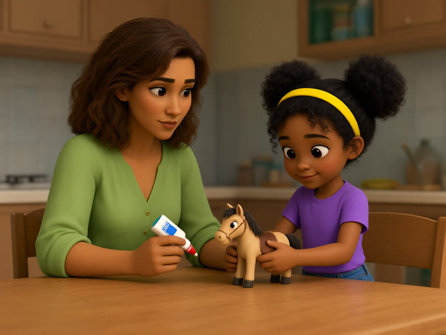

Charla en Casa es un kit gratuito de páginas ilustradas para que madres, padres, docentes y cuidadores lean con niños de 3 a 13 años. Cada página muestra una situación común (enojo, un juguete que se rompe, un compañero que se burla) y lo que el niño puede hacer, paso a paso, sin responder con violencia y pidiendo ayuda cuando la necesite. No hace falta saber leer: el niño sigue la historia con los dibujos y tú lees el texto. Ya están disponibles el mapa con 128 situaciones en dos volúmenes y un piloto de 5 páginas para descargar e imprimir, con ilustraciones dibujadas o en 3D.
Lo que ganas
La conversación ocurre antes del momento difícil
Cuando llega el enojo o un compañero se burla, no hay tiempo para enseñar. Sí hay tiempo para recordar lo que ya conversaron.
Hoy
La lección llega en el peor momento
El niño grita, empuja o se queda callado. Le explicas después, mientras llora, y no retiene nada.
Con el kit
La lección llega en un momento tranquilo
Leen la página juntos una noche tranquila. Cuando aparece la situación, ya vio la escena y tiene una frase lista para decir.
🗣️ Palabras para lo que siente
El niño aprende a decir «me enojé» en vez de expresarlo con el cuerpo.
🧭 Un camino que se repite
Los mismos 5 pasos en cada página: aprende el camino, no la regla.
🤝 Pedir ayuda sin vergüenza
Cada página muestra quién puede ayudar. Pedir ayuda es parte del plan, no un fracaso.
En tu día
Cómo cambia esto tu hogar
Tres momentos comunes, antes y después de leer una página juntos.
🧱 Su hermano derribó la torre
Hoy: gritos, empujones y castigo.
Con la página 9: se detiene, respira y dice: «Me enojé, me gustaba la torre». Si no se le pasa, te llama.
🐴 Se rompió su juguete favorito
Hoy: llora sin parar y siente que todo terminó.
Con la página 33: guarda las piezas, pide ayuda para pegarlas y descubre que muchas cosas se pueden reparar.
🪑 Un compañero patea su silla
Hoy: le devuelve la patada o aguanta en silencio durante semanas.
Con la página 97: dice una frase firme y en voz baja, le avisa a la maestra y lo cuenta en casa si continúa.
10
minutos por noche: una página y dos preguntas.
1
situación a la vez. Sin maratones.
0
apps ni videos: imprime la página o muéstrala en la tableta, y listo.
2
preguntas al final de cada página para conversar.
Cómo funciona
Los mismos 5 pasos en todas las páginas
Como un semáforo que el niño aprende una vez y usa en cualquier cruce.

1
Me doy cuenta
Qué pasó y qué siento. Le pongo nombre a la emoción.
2
Me detengo
Respiro despacio antes de reaccionar. Me alejo un poco si hace falta.
3
Pienso
Una opción que empeora las cosas y otra que ayuda.
4
Actúo
Elijo la opción que ayuda y preparo una frase para decir.
5
Pido ayuda
Si no puedo resolverlo solo, llamo a un adulto. Eso es ser fuerte.
📘 Volumen 1 · Lo que siento
Una historieta de 6 viñetas, una por paso, más un final feliz. Enojo, miedo, frustración e imprevistos en casa, en la escuela, con los cambios y las visitas al médico. Pensado para los más pequeños: poco texto y muchas imágenes.
📗 Volumen 2 · Convivo y me protejo
Una escena, qué está pasando, qué no ayuda y qué puedo intentar decir, quién puede ayudar y una charla familiar. Amistad, exclusión, burlas, acusaciones, fuerza e internet.
Lo que el kit no promete: no es terapia y no resuelve todo por sí solo. Abre la conversación y le da al niño una guía para recordar. La regla del Volumen 2 es clara: nunca enseñar a devolver la agresión ni a burlarse; la seguridad va antes que cualquier objeto; ante la fuerza, las amenazas, un grupo o una conducta repetida, siempre debe acompañar un adulto.
Para quién
Quién lo usa y qué obtiene cada persona
Las ilustraciones de abajo son del propio piloto.
👨👩👧 Madres y padres
Una conversación cada noche sobre lo que puede pasar en la escuela y en casa, con frases listas para usar.

🏫 Docentes
Una página para proyectar y conversar sobre la convivencia y el bullying, con preguntas para el grupo al final.

🧸 Abuelos y cuidadores
Una forma sencilla de hablar de emociones sin sermones: la página hace la parte difícil y tú solo la lees con el niño.
El mapa
128 situaciones en dos volúmenes
8 capítulos por volumen y 8 situaciones por capítulo. Cada una indica la franja de edad: P (3 a 6), M (7 a 10), G (11 a 13). Abre un capítulo para ver la lista.
📘 Volumen 1 · Lo que siento
situaciones 1 a 64
Cap. 1 · ¿Qué emoción es esta?
¿Qué emoción es esta?
Dónde aparece la emoción en mi cuerpo
¿La emoción es pequeña o grande?
Puedo sentir dos cosas al mismo tiempo
Los demás sienten distinto a mí
Cuando no sé qué estoy sintiendo
Contar lo que siento con palabras
Puedo sentir cualquier emoción; no cualquier conducta está bien
Cap. 2 · Cuando la emoción crece
Cuando estoy enojado ✅ piloto
Cuando me frustro
Cuando tengo miedo
Cuando estoy preocupado
Cuando estoy triste y no sé por qué
Cuando siento vergüenza
Cuando siento celos de mi hermano
Cuando siento envidia de un amigo
Cap. 3 · Vuelvo a la calma
Respirar despacio (la respiración del globo)
Contar hasta 10 y alejarme un poco
Mi rincón de la calma
El cuerpo ayuda a calmarse
¿Problema pequeño o grande? ✅ piloto
Esperar mi turno
Esperar algo que deseo mucho
Detenerme cuando mi cuerpo está demasiado inquieto
Cap. 4 · Las cosas no siempre salen como quiero
Cuando pierdo un juego
Cuando escucho un «no»
Cuando cambian el plan a último momento
Cuando me equivoco
Cuando no me sale a la primera
Cuando saco una nota baja
Cuando el dibujo no queda como imaginaba
Cuando fue mi culpa y tengo que decirlo
Cap. 5 · Algo salió mal en casa
Cuando se rompe mi juguete favorito ✅ piloto
Cuando la lluvia arruina el paseo
Cuando mi hermano toca mis cosas
Cuando me asusta un trueno
Cuando se va la visita
Cuando la comida no es la que me gusta
Cuando tengo que apagar la pantalla
Cuando despierto después de una pesadilla
Cap. 6 · En el salón de clases
Cuando la clase me parece aburrida
Cuando termino antes que los demás
Cuando no entendí la explicación
Cuando me da miedo preguntar
Cuando la tarea parece demasiado difícil
Antes de un examen
Exponer un trabajo frente al grupo
Cuando me distraigo y me pierdo la clase
Cap. 7 · Cambios y lugares nuevos
El primer día en una escuela nueva
Cuando nos mudamos de casa
Cuando llega un hermanito
Quedarme con otra persona cuando mis padres salen
Un lugar con mucha gente y ruido
Viajar y dormir fuera de casa
Cuando tengo dos casas
Cuando muere una mascota
Cap. 8 · Salud y cuerpo
Ir al médico
Vacunarme
Ir al dentista
Un medicamento con mal sabor
Estar enfermo y no poder jugar
Cortarme el pelo
Acostarme a la hora adecuada
Cuando alguien de mi familia está enfermo
📗 Volumen 2 · Convivo y me protejo
situaciones 65 a 128
Cap. 1 · Hacer y mantener amistades
Sumarme a un juego que ya empezó
Cuando queremos jugar a cosas distintas
Compartir un juguete
Cuando mi amigo juega con otra persona
Pedir disculpas de verdad
Cuando mi amigo me pide disculpas
Amigo de verdad × amigo que solo me usa
Cuando un amigo cuenta mi secreto
Cap. 2 · Cuando me dejan fuera
«No puedes jugar con nosotros»
Cuando nadie se sienta conmigo en el recreo
Nadie me elige para el equipo
No me invitaron a la fiesta
El grupo acordó no hablarme
Me dejaron fuera del grupo de la clase
Cuando soy nuevo
Cuando dejo a alguien fuera
Cap. 3 · Bromas que lastiman
Cuando se ríen de mí
Un apodo que no me gusta
Se burlan de mi ropa, mi pelo o mi cuerpo
Imitan mi forma de hablar
¿Es una broma o una burla?
Cuando dicen que soy tonto
Cuando se repite todos los días (es bullying)
Responder con firmeza y sin ofender
Cap. 4 · Cuando me echan la culpa
Dicen que tomé algo que no tomé
Quieren que admita algo que no hice ✅ piloto
Difunden una mentira sobre mí
El profesor le cree a la otra persona
Un compañero quiere copiarse de mí en el examen
Vi quién lo hizo y tengo miedo de contarlo
Contar × acusar
Cuando sí fue mi culpa
Cap. 5 · Fuerza, amenazas y miedo
Alguien que viene detrás de mí no deja de molestarme ✅ piloto
Cuando no me dejan pasar
Me quitan la merienda o los útiles
Me amenazan con pegarme
Un grupo me rodea
Me desafían a pelear
Me lastiman y dicen «fue sin querer»
Mi cuerpo vale más que cualquier objeto
Cap. 6 · Mi cuerpo es mío (se publica solo después de la revisión de un especialista)
Puedo decir «no» a un abrazo o un beso
Las partes de mi cuerpo que son solo mías
Un secreto bueno × un secreto malo
Cuando alguien me pide algo extraño
Cuando alguien me hace sentir incómodo
Los adultos en quienes confío
Perderme en un lugar lleno de gente
Cuando un desconocido me habla
Cap. 7 · En el celular y en internet
Hablan mal de mí en el grupo
Publican una foto mía sin que yo quiera
Un desconocido me contacta en un juego
Me piden una foto o mi contraseña
Un reto peligroso en un video
Veo algo que me asusta en la pantalla
Captura de pantalla, bloqueo y un adulto
Antes de publicar: ¿y si me pasara a mí?
Cap. 8 · Cuando veo que le pasa a otra persona
Veo que se burlan de alguien
Todos se ríen y a mí no me da risa
Acompañar a quien está solo
Avisarle a un adulto sin exponerme
Mi amigo es quien hace bullying
Hice bullying y quiero reparar el daño
Un compañero que es diferente
Hacer de la escuela un lugar mejor
Cómo empezar
Esta noche, con una página
No tienes que instalar nada. Solo necesitas el PDF del piloto.
1
Descarga el piloto en el estilo que prefiera tu hijo
Las mismas 5 páginas en PDF tamaño A4 y con dos estilos de ilustración. El estilo dibujado usa menos tinta en la impresora.
Empieza por algo conocido: si esta semana hubo una pelea entre hermanos, elige la página 9. Imprímela o muéstrala en la tableta.
3
Lean juntos y respondan las 2 preguntas
El niño mira cada viñeta y tú lees el texto. Al final están las preguntas de la «Charla familiar». Sin apuro y sin examen: cualquier respuesta está bien.
🤖 Para quien usa IA (opcional): pedir una página sobre la situación de tu hijo
Si no usas ningún asistente de IA, puedes saltar esta parte: las páginas del piloto ya bastan. Claude Code y Codex son asistentes de IA que leen los archivos del kit (el mapa y las páginas) y escriben una página nueva con el mismo formato.
💬 ¿Quieres una página sobre una situación de tu hijo?
Si usas Claude Code o Codex, copia el pedido de abajo. La IA lee el kit, escribe una página nueva con el mismo formato y te muestra el texto antes de crear imágenes.
Lee el repositorio github.com/inematds/kit-socioemocional, en especial MAPA.md y el archivo piloto/roteiro.json.
Mi hijo tiene [EDAD] años y está pasando por esto: [CUENTA LA SITUACIÓN EN 2 O 3 FRASES].
Escribe una página nueva con el mismo formato del kit (Volumen 1 si se trata de una emoción o un imprevisto; Volumen 2 si se trata de convivencia), con los 5 pasos, una frase que el niño pueda decir, quién puede ayudar y dos preguntas para conversar.
Reglas: nada de devolver la agresión ni burlas, lenguaje adecuado para su edad y muéstrame solo el texto. No generes imágenes ni cambies archivos antes de que te dé el sí.
¿Es un tema técnico y también quieres generar las ilustraciones? La guía paso a paso está en el README del proyecto (en español).
De dónde viene
Métodos que ya existen, en un formato para casa
El kit no inventa la pedagogía. Reúne ideas conocidas en un formato ilustrado, en portugués y gratuito.
📖 Historias Sociales
Creadas por Carol Gray en 1993: historias breves en primera persona que muestran una situación antes de que ocurra. Nacieron para niños autistas y hoy se usan con cualquier niño.
🌡️ RULER (Yale)
Reconocer, comprender, nombrar, expresar y regular las emociones. De ahí viene la idea de ponerle nombre a lo que sentimos y medir la intensidad de la emoción. Sobre el método (en inglés)
🚦 Zonas de Regulación
Estados emocionales representados con colores, cada uno con su propio conjunto de estrategias, y la pregunta «¿problema pequeño o grande?». Materiales gratuitos (en inglés)
Con honestidad: las investigaciones sobre las historias sociales muestran resultados variados. Funcionan mejor para reducir una conducta difícil que para enseñar una habilidad nueva (revisión de 2020 (en inglés)). Por eso el kit no promete resultados: abre la conversación. Si el niño sufre mucho o la situación se repite, habla con la escuela y con un profesional.
El piloto
5 páginas listas, en dos estilos para que elijas
Tres del Volumen 1 y dos del Volumen 2, con el mismo texto. Muéstrale los dos estilos a tu hijo y deja que elija. Haz clic para verlas en tamaño grande (en portugués).
✏️ Dibujadas
estilo de libro infantil, fondo blanco y poco consumo de tinta
9 · Cuando estoy enojado33 · Cuando se rompe mi juguete favorito21 · ¿Problema pequeño o grande?97 · Alguien que viene detrás de mí no deja de molestarme90 · Quieren que admita algo que no hice
97 · Alguien que viene detrás de mí no deja de molestarme90 · Quieren que admita algo que no hice
44
ilustraciones en las 10 páginas (22 por estilo), más las referencias de cada personaje y del caballito.
6 × 3
ilustraciones reh hechas: 6 en 3D y 3 dibujadas (personajes repetidos, hoja de referencia copiada y papeles intercambiados).
0
letras dentro de las imágenes: el texto va encima, siempre correcto y fácil de traducir.
4
personajes fijos: Leo, Bia, la madre y la maestra.
Lo que todavía falla: el personaje no siempre sale idéntico en todas las viñetas (en 3D, la diadema de Bia desapareció en una viñeta; en ambos estilos, un objeto cambió de tamaño hasta que tuvo su propia imagen de referencia). Para todo el kit, cada personaje y cada objeto que se repita tendrá una imagen de referencia.
Preguntas
Preguntas frecuentes
¿Mi hijo necesita saber leer?
No. Sigue la historia con los dibujos y tú lees. Los mayores pueden leerla y contar lo que piensan.
¿Cuesta algo?
No. El kit es gratuito, como todo el contenido de inema.club.
¿Reemplaza al psicólogo o a la escuela?
No. Es un apoyo para conversar en casa. Si el bullying se repite, hay mucho miedo o cambia la conducta, hace falta hablar con la escuela y con un profesional.
¿Sirve para un niño autista?
Las historias sociales nacieron para niños autistas y el formato visual ayuda. Acuerda su uso con el terapeuta, quien puede adaptar la página al niño.
¿Por qué el kit no enseña a devolver la agresión?
Responder con violencia suele empeorar las cosas y puede lastimar. Una frase firme, tomar distancia y contar con un adulto protegen sin iniciar otra pelea.
¿Cuándo estarán listas las otras páginas?
El mapa de 128 situaciones ya está listo. Las páginas se publicarán por capítulo después del piloto; el capítulo «Mi cuerpo es mío» saldrá solo después de la revisión de un especialista.
¿De qué situación te habría gustado conversar antes con tu hijo? Lean hoy la primera página: gratis en inema.club, directamente en internet.